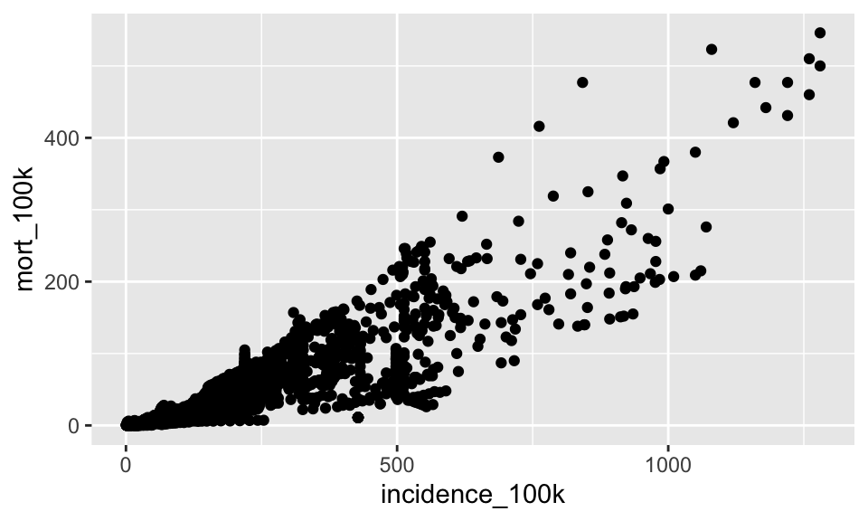
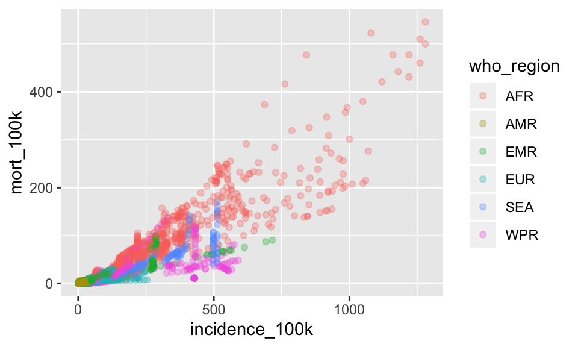

Chapter 14 Manipulating Data
This chapter demonstrates techniques for data manipulation and analysis with the split-apply-combine strategy.
Before you begin this chapter, create a new RProject to house your script from this lesson and the nhanes dataset, which you can download by right clicking on the file below
14.1 R Packages
First, we will learn to install and load a package in R and then we’ll use functions from that package.
To install a package, go down to the console pane and type install.packages("name-of-package"). Let’s use this code to install the readr package.
# install.packages("readr")You will only need to install the package once per computer, so that is why we do not preserve this line in the script.
This function will access internet and the Comprehensive R Archive Network (CRAN) to download a trusted version of the package.
Once you see the > in the console, it means the download has finished. Now we’ll load the package in our script using the special function library(). If you need to create a new script, go to File –> New –> New R Script. Then type
library("readr")Let’s install and load a second package called dplyr which has functions for manipulating datasets.
First go down to the console to install the package
# install.packages("dplyr")Then load the package by writing this line in your script
library("dplyr")Notice the messages that come out. The function ran and there is no error, but there is some text in red that we should read and understand.
This text tells us that there are now multiple functions called filter. When we call the filter() function, the one that will be chosen is from the dplyr package that we just loaded. If we want to run the filter() function from the stats package, we will now need to specify that (by calling stats::filter()).
14.2 Read in data
Now let’s read in some data. In the introductory chapter, we used the read.csv() function to read data into R. The object we created with that function was a dataframe.
This time, we’ll use a slightly different function, read_csv() to read in our data. The object that is created will be a tibble. A tibbles is a dataframe at its core, but it tweaks some older behaviors to make life a little easier. The main difference is
14.3 Review
14.3.1 Our data
The data we are going to look at is cleaned data from the National Health and Nutrition Examination Survey from the CDC.
14.3.2 Reading in data
We need to load both the dplyr and readr packages for efficiently reading in and displaying this data. Both of them are included in the tidyverse package so we will just install and load that package.
# Load packages
# install.packages("tidyverse")
library(tidyverse)
# Read in data
nh <- read_csv(file="data/nhanes.csv")## Parsed with column specification:
## cols(
## .default = col_double(),
## Gender = col_character(),
## Race = col_character(),
## Education = col_character(),
## MaritalStatus = col_character(),
## RelationshipStatus = col_character(),
## Insured = col_character(),
## HomeOwn = col_character(),
## Work = col_character(),
## Diabetes = col_character(),
## PhysActive = col_character(),
## SmokingStatus = col_character()
## )## See spec(...) for full column specifications.# Display the data
nh
# Optionally, bring up the data in a viewer window
# View(nh)## # A tibble: 5,000 x 32
## id Gender Age Race Education MaritalStatus RelationshipSta…
## <dbl> <chr> <dbl> <chr> <chr> <chr> <chr>
## 1 62163 male 14 Asian <NA> <NA> <NA>
## 2 62172 female 43 Black High Sch… NeverMarried Single
## 3 62174 male 80 White College … Married Committed
## 4 62174 male 80 White College … Married Committed
## 5 62175 male 5 White <NA> <NA> <NA>
## 6 62176 female 34 White College … Married Committed
## 7 62178 male 80 White High Sch… Widowed Single
## 8 62180 male 35 White College … Married Committed
## 9 62186 female 17 Black <NA> <NA> <NA>
## 10 62190 female 15 Mexi… <NA> <NA> <NA>
## # … with 4,990 more rows, and 25 more variables: Insured <chr>,
## # Income <dbl>, Poverty <dbl>, HomeRooms <dbl>, HomeOwn <chr>,
## # Work <chr>, Weight <dbl>, Height <dbl>, BMI <dbl>, Pulse <dbl>,
## # BPSys <dbl>, BPDia <dbl>, Testosterone <dbl>, HDLChol <dbl>,
## # TotChol <dbl>, Diabetes <chr>, DiabetesAge <dbl>, nPregnancies <dbl>,
## # nBabies <dbl>, SleepHrsNight <dbl>, PhysActive <chr>,
## # PhysActiveDays <dbl>, AlcoholDay <dbl>, AlcoholYear <dbl>,
## # SmokingStatus <chr>14.4 The dplyr package
The dplyr package is a relatively new R package that makes data manipulation fast and easy. It imports functionality from another package called magrittr that allows you to chain commands together into a pipeline that will completely change the way you write R code such that you’re writing code the way you’re thinking about the problem.
When you read in data with the readr package (read_csv()) and you had the dplyr package loaded already, the data frame takes on this “special” class of data frames called a tbl (pronounced “tibble”), which you can see with class(nh). If you have other “regular” data frames in your workspace, the as_tibble() function will convert it into the special dplyr tbl that displays nicely (e.g.: iris <- as_tibble(iris)). You don’t have to turn all your data frame objects into tibbles, but it does make working with large datasets a bit easier.
You can read more about tibbles in Tibbles chapter in R for Data Science or in the tibbles vignette. They keep most of the features of data frames, and drop the features that used to be convenient but are now frustrating (i.e. converting character vectors to factors). You can read more about the differences between data frames and tibbles in this section of the tibbles vignette, but the major convenience for us concerns printing (aka displaying) a tibble to the screen. When you print (i.e., display) a tibble, it only shows the first 10 rows and all the columns that fit on one screen. It also prints an abbreviated description of the column type. You can control the default appearance with options:
options(tibble.print_max = n, tibble.print_min = m): if there are more than n rows, print only the first m rows. Useoptions(tibble.print_max = Inf)to always show all rows.options(tibble.width = Inf)will always print all columns, regardless of the width of the screen.
14.5 dplyr verbs
The dplyr package gives you a handful of useful verbs for managing data. On their own they don’t do anything that base R can’t do. Here are some of the single-table verbs we’ll be working with in this lesson (single-table meaning that they only work on a single table – contrast that to two-table verbs used for joining data together, which we’ll cover in a later lesson).
filter()select()mutate()arrange()summarize()group_by()
They all take a data frame or tibble as their input for the first argument, and they all return a data frame or tibble as output.
14.5.1 filter()
If you want to filter rows of the data where some condition is true, use the filter() function.
- The first argument is the data frame you want to filter, e.g.
filter(mnha, .... - The second argument is a condition you must satisfy, e.g.
filter(nh, Diabetes == "Yes"). If you want to satisfy all of multiple conditions, you can use the “and” operator,&. The “or” operator|(the pipe character, usually shift-backslash) will return a subset that meet any of the conditions.
==: Equal to!=: Not equal to>,>=: Greater than, greater than or equal to<,<=: Less than, less than or equal to
Let’s try it out. For this to work you have to have already loaded the dplyr package (we loaded it when we ran library(tidyverse)).
Let’s take a look at just the people in the NHanes survey with Diabetes.
# First, make sure you've loaded the dplyr package from the tidyverse
# library(tidyverse)
# Look at just the people with Diabetes
filter(nh, Diabetes == "Yes")## # A tibble: 373 x 32
## id Gender Age Race Education MaritalStatus RelationshipSta…
## <dbl> <chr> <dbl> <chr> <chr> <chr> <chr>
## 1 62228 male 50 White College … Married Committed
## 2 62228 male 50 White College … Married Committed
## 3 62228 male 50 White College … Married Committed
## 4 62233 female 63 Mexi… 9 - 11th… Separated Single
## 5 62259 male 61 Black Some Col… Divorced Single
## 6 62302 female 51 Hisp… 8th Grade NeverMarried Single
## 7 62366 male 80 White High Sch… Married Committed
## 8 62368 female 80 Hisp… 8th Grade Widowed Single
## 9 62388 female 69 White High Sch… Widowed Single
## 10 62388 female 69 White High Sch… Widowed Single
## # … with 363 more rows, and 25 more variables: Insured <chr>,
## # Income <dbl>, Poverty <dbl>, HomeRooms <dbl>, HomeOwn <chr>,
## # Work <chr>, Weight <dbl>, Height <dbl>, BMI <dbl>, Pulse <dbl>,
## # BPSys <dbl>, BPDia <dbl>, Testosterone <dbl>, HDLChol <dbl>,
## # TotChol <dbl>, Diabetes <chr>, DiabetesAge <dbl>, nPregnancies <dbl>,
## # nBabies <dbl>, SleepHrsNight <dbl>, PhysActive <chr>,
## # PhysActiveDays <dbl>, AlcoholDay <dbl>, AlcoholYear <dbl>,
## # SmokingStatus <chr># Optionally, bring that result up in a View window
# View(filter(nh, Diabetes == "Yes"))
# Look at multiple Race categories
unique(nh$Race) #what race categories are there?## [1] "Asian" "Black" "White" "Mexican" "Hispanic" "Other"filter(nh, Race =="Asian" | Race =="Black")## # A tibble: 877 x 32
## id Gender Age Race Education MaritalStatus RelationshipSta…
## <dbl> <chr> <dbl> <chr> <chr> <chr> <chr>
## 1 62163 male 14 Asian <NA> <NA> <NA>
## 2 62172 female 43 Black High Sch… NeverMarried Single
## 3 62186 female 17 Black <NA> <NA> <NA>
## 4 62220 female 31 Black College … NeverMarried Single
## 5 62223 male 54 Asian High Sch… Married Committed
## 6 62259 male 61 Black Some Col… Divorced Single
## 7 62271 male 7 Black <NA> <NA> <NA>
## 8 62279 male 80 Black 9 - 11th… Widowed Single
## 9 62279 male 80 Black 9 - 11th… Widowed Single
## 10 62297 male 43 Black Some Col… Married Committed
## # … with 867 more rows, and 25 more variables: Insured <chr>,
## # Income <dbl>, Poverty <dbl>, HomeRooms <dbl>, HomeOwn <chr>,
## # Work <chr>, Weight <dbl>, Height <dbl>, BMI <dbl>, Pulse <dbl>,
## # BPSys <dbl>, BPDia <dbl>, Testosterone <dbl>, HDLChol <dbl>,
## # TotChol <dbl>, Diabetes <chr>, DiabetesAge <dbl>, nPregnancies <dbl>,
## # nBabies <dbl>, SleepHrsNight <dbl>, PhysActive <chr>,
## # PhysActiveDays <dbl>, AlcoholDay <dbl>, AlcoholYear <dbl>,
## # SmokingStatus <chr># Look at people of or under age 30 whose income greater than or equal to 70K
filter(nh, Income >= 70000 & Age <= 30)## # A tibble: 760 x 32
## id Gender Age Race Education MaritalStatus RelationshipSta…
## <dbl> <chr> <dbl> <chr> <chr> <chr> <chr>
## 1 62163 male 14 Asian <NA> <NA> <NA>
## 2 62205 male 28 White College … NeverMarried Single
## 3 62205 male 28 White College … NeverMarried Single
## 4 62205 male 28 White College … NeverMarried Single
## 5 62205 male 28 White College … NeverMarried Single
## 6 62210 male 15 White <NA> <NA> <NA>
## 7 62225 female 13 Mexi… <NA> <NA> <NA>
## 8 62227 male 19 White <NA> <NA> <NA>
## 9 62235 female 2 White <NA> <NA> <NA>
## 10 62241 male 2 Hisp… <NA> <NA> <NA>
## # … with 750 more rows, and 25 more variables: Insured <chr>,
## # Income <dbl>, Poverty <dbl>, HomeRooms <dbl>, HomeOwn <chr>,
## # Work <chr>, Weight <dbl>, Height <dbl>, BMI <dbl>, Pulse <dbl>,
## # BPSys <dbl>, BPDia <dbl>, Testosterone <dbl>, HDLChol <dbl>,
## # TotChol <dbl>, Diabetes <chr>, DiabetesAge <dbl>, nPregnancies <dbl>,
## # nBabies <dbl>, SleepHrsNight <dbl>, PhysActive <chr>,
## # PhysActiveDays <dbl>, AlcoholDay <dbl>, AlcoholYear <dbl>,
## # SmokingStatus <chr># YOUR TURN: How many people in the NHanes survey that meet the above two criteria are a racial minority (not white)?
filter(nh, Age <= 30 & Race != "White")## # A tibble: 993 x 32
## id Gender Age Race Education MaritalStatus RelationshipSta…
## <dbl> <chr> <dbl> <chr> <chr> <chr> <chr>
## 1 62163 male 14 Asian <NA> <NA> <NA>
## 2 62186 female 17 Black <NA> <NA> <NA>
## 3 62190 female 15 Mexi… <NA> <NA> <NA>
## 4 62219 female 2 Mexi… <NA> <NA> <NA>
## 5 62225 female 13 Mexi… <NA> <NA> <NA>
## 6 62241 male 2 Hisp… <NA> <NA> <NA>
## 7 62257 female 2 Mexi… <NA> <NA> <NA>
## 8 62268 female 15 Mexi… <NA> <NA> <NA>
## 9 62271 male 7 Black <NA> <NA> <NA>
## 10 62301 male 23 Black 9 - 11th… NeverMarried Single
## # … with 983 more rows, and 25 more variables: Insured <chr>,
## # Income <dbl>, Poverty <dbl>, HomeRooms <dbl>, HomeOwn <chr>,
## # Work <chr>, Weight <dbl>, Height <dbl>, BMI <dbl>, Pulse <dbl>,
## # BPSys <dbl>, BPDia <dbl>, Testosterone <dbl>, HDLChol <dbl>,
## # TotChol <dbl>, Diabetes <chr>, DiabetesAge <dbl>, nPregnancies <dbl>,
## # nBabies <dbl>, SleepHrsNight <dbl>, PhysActive <chr>,
## # PhysActiveDays <dbl>, AlcoholDay <dbl>, AlcoholYear <dbl>,
## # SmokingStatus <chr>EXERCISE
1. Use filter to find out how many people in the 90th percentile for Weight have Diabetes. Hint: see ?quantile and try quantile(nh$Weight, probs=.90, na.rm = TRUE) to see the weight value which is higher than 90% of all the data, then filter() based on that. Try wrapping your answer with a dim() function so you can see how many there were.
14.5.2 select()
The filter() function allows you to return only certain rows matching a condition. The select() function returns only certain columns. The first argument is the data, and subsequent arguments are the columns you want.
# Select just the Pulse and Blood Pressure variables
select(nh, Pulse, BPSys, BPDia)## # A tibble: 5,000 x 3
## Pulse BPSys BPDia
## <dbl> <dbl> <dbl>
## 1 72 107 37
## 2 80 103 72
## 3 56 97 39
## 4 56 97 39
## 5 NA NA NA
## 6 92 107 69
## 7 68 121 72
## 8 66 107 66
## 9 86 108 64
## 10 76 113 27
## # … with 4,990 more rows# Alternatively, just remove columns. Remove the id and the HomeRooms and HomeOwn columns.
select(nh, -id, -HomeRooms, -HomeOwn)## # A tibble: 5,000 x 29
## Gender Age Race Education MaritalStatus RelationshipSta… Insured
## <chr> <dbl> <chr> <chr> <chr> <chr> <chr>
## 1 male 14 Asian <NA> <NA> <NA> Yes
## 2 female 43 Black High Sch… NeverMarried Single Yes
## 3 male 80 White College … Married Committed Yes
## 4 male 80 White College … Married Committed Yes
## 5 male 5 White <NA> <NA> <NA> Yes
## 6 female 34 White College … Married Committed Yes
## 7 male 80 White High Sch… Widowed Single Yes
## 8 male 35 White College … Married Committed Yes
## 9 female 17 Black <NA> <NA> <NA> Yes
## 10 female 15 Mexi… <NA> <NA> <NA> Yes
## # … with 4,990 more rows, and 22 more variables: Income <dbl>,
## # Poverty <dbl>, Work <chr>, Weight <dbl>, Height <dbl>, BMI <dbl>,
## # Pulse <dbl>, BPSys <dbl>, BPDia <dbl>, Testosterone <dbl>,
## # HDLChol <dbl>, TotChol <dbl>, Diabetes <chr>, DiabetesAge <dbl>,
## # nPregnancies <dbl>, nBabies <dbl>, SleepHrsNight <dbl>,
## # PhysActive <chr>, PhysActiveDays <dbl>, AlcoholDay <dbl>,
## # AlcoholYear <dbl>, SmokingStatus <chr># Notice how the original data is unchanged - still have all 32 columns
nh## # A tibble: 5,000 x 32
## id Gender Age Race Education MaritalStatus RelationshipSta…
## <dbl> <chr> <dbl> <chr> <chr> <chr> <chr>
## 1 62163 male 14 Asian <NA> <NA> <NA>
## 2 62172 female 43 Black High Sch… NeverMarried Single
## 3 62174 male 80 White College … Married Committed
## 4 62174 male 80 White College … Married Committed
## 5 62175 male 5 White <NA> <NA> <NA>
## 6 62176 female 34 White College … Married Committed
## 7 62178 male 80 White High Sch… Widowed Single
## 8 62180 male 35 White College … Married Committed
## 9 62186 female 17 Black <NA> <NA> <NA>
## 10 62190 female 15 Mexi… <NA> <NA> <NA>
## # … with 4,990 more rows, and 25 more variables: Insured <chr>,
## # Income <dbl>, Poverty <dbl>, HomeRooms <dbl>, HomeOwn <chr>,
## # Work <chr>, Weight <dbl>, Height <dbl>, BMI <dbl>, Pulse <dbl>,
## # BPSys <dbl>, BPDia <dbl>, Testosterone <dbl>, HDLChol <dbl>,
## # TotChol <dbl>, Diabetes <chr>, DiabetesAge <dbl>, nPregnancies <dbl>,
## # nBabies <dbl>, SleepHrsNight <dbl>, PhysActive <chr>,
## # PhysActiveDays <dbl>, AlcoholDay <dbl>, AlcoholYear <dbl>,
## # SmokingStatus <chr>14.5.3 mutate()
The mutate() function adds new columns to the data. Remember, it doesn’t actually modify the data frame you’re operating on, and the result is transient unless you assign it to a new object or reassign it back to itself (generally, not always a good practice).
The HDL to Total Cholesterol value can be predictive for risk of heart disease. Let’s mutate this data to add a new variable called “CholRatio” that is the HDLChol / TotChol.
mutate(phys, CholRatio=HDLChol / TotChol)14.5.4 arrange()
The arrange() function takes a data frame or tbl and arranges (or sorts) by column(s) of interest. The first argument is the data, and subsequent arguments are columns to sort on. Use the desc() function to arrange by descending.
# arrange by Testosterone (default: increasing)
arrange(nh, Testosterone)## # A tibble: 5,000 x 32
## id Gender Age Race Education MaritalStatus RelationshipSta…
## <dbl> <chr> <dbl> <chr> <chr> <chr> <chr>
## 1 62276 male 9 White <NA> <NA> <NA>
## 2 63028 female 6 Mexi… <NA> <NA> <NA>
## 3 64932 male 6 White <NA> <NA> <NA>
## 4 64932 male 6 White <NA> <NA> <NA>
## 5 64932 male 6 White <NA> <NA> <NA>
## 6 65510 female 65 White 9 - 11th… Married Committed
## 7 66992 male 7 White <NA> <NA> <NA>
## 8 67524 male 6 Hisp… <NA> <NA> <NA>
## 9 68534 female 8 Hisp… <NA> <NA> <NA>
## 10 63588 female 80 White Some Col… Married Committed
## # … with 4,990 more rows, and 25 more variables: Insured <chr>,
## # Income <dbl>, Poverty <dbl>, HomeRooms <dbl>, HomeOwn <chr>,
## # Work <chr>, Weight <dbl>, Height <dbl>, BMI <dbl>, Pulse <dbl>,
## # BPSys <dbl>, BPDia <dbl>, Testosterone <dbl>, HDLChol <dbl>,
## # TotChol <dbl>, Diabetes <chr>, DiabetesAge <dbl>, nPregnancies <dbl>,
## # nBabies <dbl>, SleepHrsNight <dbl>, PhysActive <chr>,
## # PhysActiveDays <dbl>, AlcoholDay <dbl>, AlcoholYear <dbl>,
## # SmokingStatus <chr># arrange by Weight (descending)
arrange(nh, desc(Weight))## # A tibble: 5,000 x 32
## id Gender Age Race Education MaritalStatus RelationshipSta…
## <dbl> <chr> <dbl> <chr> <chr> <chr> <chr>
## 1 70466 female 25 White High Sch… LivePartner Committed
## 2 68256 female 46 Black Some Col… Married Committed
## 3 69207 female 30 Black High Sch… NeverMarried Single
## 4 70026 male 31 Black Some Col… NeverMarried Single
## 5 65773 male 34 Black College … Married Committed
## 6 66213 male 18 Other <NA> <NA> <NA>
## 7 63215 female 62 Black Some Col… Divorced Single
## 8 65537 male 21 White High Sch… NeverMarried Single
## 9 65537 male 21 White High Sch… NeverMarried Single
## 10 65537 male 21 White High Sch… NeverMarried Single
## # … with 4,990 more rows, and 25 more variables: Insured <chr>,
## # Income <dbl>, Poverty <dbl>, HomeRooms <dbl>, HomeOwn <chr>,
## # Work <chr>, Weight <dbl>, Height <dbl>, BMI <dbl>, Pulse <dbl>,
## # BPSys <dbl>, BPDia <dbl>, Testosterone <dbl>, HDLChol <dbl>,
## # TotChol <dbl>, Diabetes <chr>, DiabetesAge <dbl>, nPregnancies <dbl>,
## # nBabies <dbl>, SleepHrsNight <dbl>, PhysActive <chr>,
## # PhysActiveDays <dbl>, AlcoholDay <dbl>, AlcoholYear <dbl>,
## # SmokingStatus <chr>14.5.5 summarize()
The summarize() function summarizes multiple values to a single value. On its own the summarize() function doesn’t seem to be all that useful. The dplyr package provides a few convenience functions called n() and n_distinct() that tell you the number of observations or the number of distinct values of a particular variable.
Notice that summarize takes a data frame and returns a data frame. In this case it’s a 1x1 data frame with a single row and a single column. The name of the column, by default is whatever the expression was used to summarize the data. This usually isn’t pretty, and if we wanted to work with this resulting data frame later on, we’d want to name that returned value something easier to deal with.
# Get the mean expression for all genes
summarize(nh, mean(Weight, na.rm = TRUE))## # A tibble: 1 x 1
## `mean(Weight, na.rm = TRUE)`
## <dbl>
## 1 70.3# Use a more friendly name, e.g., meanWeight, or whatever you want to call it.
summarize(nh, meanWeight=mean(Weight, na.rm = TRUE))## # A tibble: 1 x 1
## meanWeight
## <dbl>
## 1 70.314.5.6 group_by()
We saw that summarize() isn’t that useful on its own. Neither is group_by() All this does is takes an existing data frame and coverts it into a grouped data frame where operations are performed by group.
nh## # A tibble: 5,000 x 32
## id Gender Age Race Education MaritalStatus RelationshipSta…
## <dbl> <chr> <dbl> <chr> <chr> <chr> <chr>
## 1 62163 male 14 Asian <NA> <NA> <NA>
## 2 62172 female 43 Black High Sch… NeverMarried Single
## 3 62174 male 80 White College … Married Committed
## 4 62174 male 80 White College … Married Committed
## 5 62175 male 5 White <NA> <NA> <NA>
## 6 62176 female 34 White College … Married Committed
## 7 62178 male 80 White High Sch… Widowed Single
## 8 62180 male 35 White College … Married Committed
## 9 62186 female 17 Black <NA> <NA> <NA>
## 10 62190 female 15 Mexi… <NA> <NA> <NA>
## # … with 4,990 more rows, and 25 more variables: Insured <chr>,
## # Income <dbl>, Poverty <dbl>, HomeRooms <dbl>, HomeOwn <chr>,
## # Work <chr>, Weight <dbl>, Height <dbl>, BMI <dbl>, Pulse <dbl>,
## # BPSys <dbl>, BPDia <dbl>, Testosterone <dbl>, HDLChol <dbl>,
## # TotChol <dbl>, Diabetes <chr>, DiabetesAge <dbl>, nPregnancies <dbl>,
## # nBabies <dbl>, SleepHrsNight <dbl>, PhysActive <chr>,
## # PhysActiveDays <dbl>, AlcoholDay <dbl>, AlcoholYear <dbl>,
## # SmokingStatus <chr>group_by(nh, Race)## # A tibble: 5,000 x 32
## # Groups: Race [6]
## id Gender Age Race Education MaritalStatus RelationshipSta…
## <dbl> <chr> <dbl> <chr> <chr> <chr> <chr>
## 1 62163 male 14 Asian <NA> <NA> <NA>
## 2 62172 female 43 Black High Sch… NeverMarried Single
## 3 62174 male 80 White College … Married Committed
## 4 62174 male 80 White College … Married Committed
## 5 62175 male 5 White <NA> <NA> <NA>
## 6 62176 female 34 White College … Married Committed
## 7 62178 male 80 White High Sch… Widowed Single
## 8 62180 male 35 White College … Married Committed
## 9 62186 female 17 Black <NA> <NA> <NA>
## 10 62190 female 15 Mexi… <NA> <NA> <NA>
## # … with 4,990 more rows, and 25 more variables: Insured <chr>,
## # Income <dbl>, Poverty <dbl>, HomeRooms <dbl>, HomeOwn <chr>,
## # Work <chr>, Weight <dbl>, Height <dbl>, BMI <dbl>, Pulse <dbl>,
## # BPSys <dbl>, BPDia <dbl>, Testosterone <dbl>, HDLChol <dbl>,
## # TotChol <dbl>, Diabetes <chr>, DiabetesAge <dbl>, nPregnancies <dbl>,
## # nBabies <dbl>, SleepHrsNight <dbl>, PhysActive <chr>,
## # PhysActiveDays <dbl>, AlcoholDay <dbl>, AlcoholYear <dbl>,
## # SmokingStatus <chr>group_by(nh, Race, Diabetes)## # A tibble: 5,000 x 32
## # Groups: Race, Diabetes [18]
## id Gender Age Race Education MaritalStatus RelationshipSta…
## <dbl> <chr> <dbl> <chr> <chr> <chr> <chr>
## 1 62163 male 14 Asian <NA> <NA> <NA>
## 2 62172 female 43 Black High Sch… NeverMarried Single
## 3 62174 male 80 White College … Married Committed
## 4 62174 male 80 White College … Married Committed
## 5 62175 male 5 White <NA> <NA> <NA>
## 6 62176 female 34 White College … Married Committed
## 7 62178 male 80 White High Sch… Widowed Single
## 8 62180 male 35 White College … Married Committed
## 9 62186 female 17 Black <NA> <NA> <NA>
## 10 62190 female 15 Mexi… <NA> <NA> <NA>
## # … with 4,990 more rows, and 25 more variables: Insured <chr>,
## # Income <dbl>, Poverty <dbl>, HomeRooms <dbl>, HomeOwn <chr>,
## # Work <chr>, Weight <dbl>, Height <dbl>, BMI <dbl>, Pulse <dbl>,
## # BPSys <dbl>, BPDia <dbl>, Testosterone <dbl>, HDLChol <dbl>,
## # TotChol <dbl>, Diabetes <chr>, DiabetesAge <dbl>, nPregnancies <dbl>,
## # nBabies <dbl>, SleepHrsNight <dbl>, PhysActive <chr>,
## # PhysActiveDays <dbl>, AlcoholDay <dbl>, AlcoholYear <dbl>,
## # SmokingStatus <chr>The real power comes in where group_by() and summarize() are used together. First, write the group_by() statement. Then wrap the result of that with a call to summarize().
# Get the mean Weight for each race
# group_by(nh, Race)
summarize(group_by(nh, Race), meanWeight=mean(Weight, na.rm = TRUE))## # A tibble: 6 x 2
## Race meanWeight
## <chr> <dbl>
## 1 Asian 59.8
## 2 Black 72.9
## 3 Hispanic 63.9
## 4 Mexican 63.2
## 5 Other 66.4
## 6 White 72.8# Get the mean Weight for each race and Diabetes status
# group_by(nh, Race, Diabetes)
summarize(group_by(nh, Race, Diabetes), meanWeight=mean(Weight, na.rm = TRUE))## # A tibble: 18 x 3
## # Groups: Race [6]
## Race Diabetes meanWeight
## <chr> <chr> <dbl>
## 1 Asian No 58.8
## 2 Asian Yes 79.8
## 3 Asian <NA> 7.05
## 4 Black No 70.5
## 5 Black Yes 96.9
## 6 Black <NA> 7.12
## 7 Hispanic No 63.0
## 8 Hispanic Yes 82.9
## 9 Hispanic <NA> 8.6
## 10 Mexican No 62.9
## 11 Mexican Yes 88.7
## 12 Mexican <NA> 8.29
## 13 Other No 66.0
## 14 Other Yes 95.6
## 15 Other <NA> 7.64
## 16 White No 72.2
## 17 White Yes 91.6
## 18 White <NA> 11.114.6 The pipe: %>%
14.6.1 How %>% works
This is where things get awesome. The dplyr package imports functionality from the magrittr package that lets you pipe the output of one function to the input of another, so you can avoid nesting functions. It looks like this: %>%. You don’t have to load the magrittr package to use it since dplyr imports its functionality when you load the dplyr package.
Here’s the simplest way to use it. Remember the head() function. It expects a data frame as input, and the next argument is the number of lines to print. These two commands are identical:
head(nh, 5)## # A tibble: 5 x 32
## id Gender Age Race Education MaritalStatus RelationshipSta… Insured
## <dbl> <chr> <dbl> <chr> <chr> <chr> <chr> <chr>
## 1 62163 male 14 Asian <NA> <NA> <NA> Yes
## 2 62172 female 43 Black High Sch… NeverMarried Single Yes
## 3 62174 male 80 White College … Married Committed Yes
## 4 62174 male 80 White College … Married Committed Yes
## 5 62175 male 5 White <NA> <NA> <NA> Yes
## # … with 24 more variables: Income <dbl>, Poverty <dbl>, HomeRooms <dbl>,
## # HomeOwn <chr>, Work <chr>, Weight <dbl>, Height <dbl>, BMI <dbl>,
## # Pulse <dbl>, BPSys <dbl>, BPDia <dbl>, Testosterone <dbl>,
## # HDLChol <dbl>, TotChol <dbl>, Diabetes <chr>, DiabetesAge <dbl>,
## # nPregnancies <dbl>, nBabies <dbl>, SleepHrsNight <dbl>,
## # PhysActive <chr>, PhysActiveDays <dbl>, AlcoholDay <dbl>,
## # AlcoholYear <dbl>, SmokingStatus <chr>nh %>% head(5)## # A tibble: 5 x 32
## id Gender Age Race Education MaritalStatus RelationshipSta… Insured
## <dbl> <chr> <dbl> <chr> <chr> <chr> <chr> <chr>
## 1 62163 male 14 Asian <NA> <NA> <NA> Yes
## 2 62172 female 43 Black High Sch… NeverMarried Single Yes
## 3 62174 male 80 White College … Married Committed Yes
## 4 62174 male 80 White College … Married Committed Yes
## 5 62175 male 5 White <NA> <NA> <NA> Yes
## # … with 24 more variables: Income <dbl>, Poverty <dbl>, HomeRooms <dbl>,
## # HomeOwn <chr>, Work <chr>, Weight <dbl>, Height <dbl>, BMI <dbl>,
## # Pulse <dbl>, BPSys <dbl>, BPDia <dbl>, Testosterone <dbl>,
## # HDLChol <dbl>, TotChol <dbl>, Diabetes <chr>, DiabetesAge <dbl>,
## # nPregnancies <dbl>, nBabies <dbl>, SleepHrsNight <dbl>,
## # PhysActive <chr>, PhysActiveDays <dbl>, AlcoholDay <dbl>,
## # AlcoholYear <dbl>, SmokingStatus <chr>Let’s use one of the dplyr verbs.
filter(nh, SmokingStatus =="Current")## # A tibble: 698 x 32
## id Gender Age Race Education MaritalStatus RelationshipSta…
## <dbl> <chr> <dbl> <chr> <chr> <chr> <chr>
## 1 62172 female 43 Black High Sch… NeverMarried Single
## 2 62232 female 42 White Some Col… Married Committed
## 3 62279 male 80 Black 9 - 11th… Widowed Single
## 4 62279 male 80 Black 9 - 11th… Widowed Single
## 5 62350 female 43 White High Sch… Divorced Single
## 6 62350 female 43 White High Sch… Divorced Single
## 7 62350 female 43 White High Sch… Divorced Single
## 8 62363 female 44 White 9 - 11th… Divorced Single
## 9 62397 female 70 Mexi… 8th Grade Widowed Single
## 10 62418 male 80 White 8th Grade Widowed Single
## # … with 688 more rows, and 25 more variables: Insured <chr>,
## # Income <dbl>, Poverty <dbl>, HomeRooms <dbl>, HomeOwn <chr>,
## # Work <chr>, Weight <dbl>, Height <dbl>, BMI <dbl>, Pulse <dbl>,
## # BPSys <dbl>, BPDia <dbl>, Testosterone <dbl>, HDLChol <dbl>,
## # TotChol <dbl>, Diabetes <chr>, DiabetesAge <dbl>, nPregnancies <dbl>,
## # nBabies <dbl>, SleepHrsNight <dbl>, PhysActive <chr>,
## # PhysActiveDays <dbl>, AlcoholDay <dbl>, AlcoholYear <dbl>,
## # SmokingStatus <chr>nh %>% filter(SmokingStatus =="Current")## # A tibble: 698 x 32
## id Gender Age Race Education MaritalStatus RelationshipSta…
## <dbl> <chr> <dbl> <chr> <chr> <chr> <chr>
## 1 62172 female 43 Black High Sch… NeverMarried Single
## 2 62232 female 42 White Some Col… Married Committed
## 3 62279 male 80 Black 9 - 11th… Widowed Single
## 4 62279 male 80 Black 9 - 11th… Widowed Single
## 5 62350 female 43 White High Sch… Divorced Single
## 6 62350 female 43 White High Sch… Divorced Single
## 7 62350 female 43 White High Sch… Divorced Single
## 8 62363 female 44 White 9 - 11th… Divorced Single
## 9 62397 female 70 Mexi… 8th Grade Widowed Single
## 10 62418 male 80 White 8th Grade Widowed Single
## # … with 688 more rows, and 25 more variables: Insured <chr>,
## # Income <dbl>, Poverty <dbl>, HomeRooms <dbl>, HomeOwn <chr>,
## # Work <chr>, Weight <dbl>, Height <dbl>, BMI <dbl>, Pulse <dbl>,
## # BPSys <dbl>, BPDia <dbl>, Testosterone <dbl>, HDLChol <dbl>,
## # TotChol <dbl>, Diabetes <chr>, DiabetesAge <dbl>, nPregnancies <dbl>,
## # nBabies <dbl>, SleepHrsNight <dbl>, PhysActive <chr>,
## # PhysActiveDays <dbl>, AlcoholDay <dbl>, AlcoholYear <dbl>,
## # SmokingStatus <chr>Put it all together. Make a summary table of mean weight for each race and diabetes status (first filtering out Diabetes = NA). Then let’s round the means to 2 digits and sort the results by the mean weight of each group
14.6.2 Nesting versus %>%
So what?
Now, think about this for a minute. What if we wanted to get the mean weight separately for each Race only for Diabetes = Yes or No, and return a sorted list of those mean weights rounded to two digits? Mentally we would do something like this:
- Take the
nhdataset - then
filter()it for Diabetes Yes/No (!= NA) - then
group_by()the Race and Diabetes Status - then
summarize()to get the mean Weight for each group - then
mutate()to round the result of the above calculation to two significant digits - then
arrange()by the rounded mean weight above
But in code, it gets ugly without the pipe.
arrange(mutate(summarize(group_by(filter(nh, Diabetes !="NA"), Race, Diabetes), meanWeight=mean(Weight, na.rm = TRUE)), meanWeight=round(meanWeight, 2)), meanWeight)Now compare that with the mental process of what you’re actually trying to accomplish. The way you would do this without pipes is completely inside-out and backwards from the way you express in words and in thought what you want to do. The pipe operator %>% allows you to pass the output data frame from one function to the input data frame to another function.
14.6.3 Piping exercises
EXERCISE
Here’s a warm-up round. Try the following.
Show the BPSys, BPDia, and TotChol for minority people when Weight >= 100kg. Hint: 2 pipes: filter and select.
## # A tibble: 204 x 3
## BPSys BPDia TotChol
## <dbl> <dbl> <dbl>
## 1 120 71 5.09
## 2 98 59 3.26
## 3 137 66 3.62
## 4 118 54 4.55
## 5 118 54 4.55
## 6 150 84 6.44
## 7 110 69 5.72
## 8 134 80 3.72
## 9 134 80 3.72
## 10 134 80 3.72
## # … with 194 more rowsShow the four female, current smokers with the highest Testosterone values. Return these womens’ Race, Pulse, and Weight. Hint: 4 pipes: filter, arrange, head, and select.
## # A tibble: 4 x 3
## Race Pulse Weight
## <chr> <dbl> <dbl>
## 1 White 98 52.8
## 2 White 98 52.8
## 3 White 98 52.8
## 4 White 70 55.314.6.4 Piping into plots
We should remove this section
14.6.5 About ggplot2
ggplot2 is a widely used R package that extends R’s visualization capabilities. It takes the hassle out of things like creating legends, mapping other variables to scales like color, or faceting plots into small multiples. We’ll learn about what all these things mean shortly.
Where does the “gg” in ggplot2 come from? The ggplot2 package provides an R implementation of Leland Wilkinson’s Grammar of Graphics (1999). The Grammar of Graphics allows you to think beyond the garden variety plot types (e.g. scatterplot, barplot) and the consider the components that make up a plot or graphic, such as how data are represented on the plot (as lines, points, etc.), how variables are mapped to coordinates or plotting shape or color, what transformation or statistical summary is required, and so on.
Specifically, ggplot2 allows you to build a plot layer-by-layer by specifying:
- a geom, which specifies how the data are represented on the plot (points, lines, bars, etc.),
- aesthetics that map variables in the data to axes on the plot or to plotting size, shape, color, etc.,
- a stat, a statistical transformation or summary of the data applied prior to plotting,
- facets, which we’ve already seen above, that allow the data to be divided into chunks on the basis of other categorical or continuous variables and the same plot drawn for each chunk.
14.6.6 Continuous X by Continuous Y
Plot Height by Weight
nh %>%
ggplot(aes(x = Height, y = Weight)) #nothing happened...why not?
nh %>%
ggplot(aes(x = Height, y = Weight)) + geom_point()## Warning: Removed 166 rows containing missing values (geom_point).14.6.7 Add color by factor(Age)
Create a new variable called Age2 using mutate and cut that codes Age <= 18 as child and Age >18 as adult. Then color the above plot by Age2
nh %>%
mutate(Age2 = cut(Age, breaks = c(-Inf, 18, Inf), right = FALSE, labels = c("child", "adult"))) %>%
ggplot(aes(x = Height, y = Weight, color = Age2)) + geom_point()## Warning: Removed 166 rows containing missing values (geom_point).
14.6.8 Categorical X, Continuous Y –> Boxplot
filter out the Race = Other category, Plot Race on the X and Weight on the Y. Color the plot by Gender.
nh %>%
filter(Race != "Other") %>%
ggplot(aes(Race, Weight, fill = Gender)) + geom_boxplot()## Warning: Removed 31 rows containing non-finite values (stat_boxplot).
14.6.9 Line plot
Graph age against mean height at that age
nh %>%
group_by(Age) %>%
summarize(meanHeight = mean(Height, na.rm = TRUE)) %>%
ggplot(aes(Age, meanHeight)) + geom_line()## Warning: Removed 2 rows containing missing values (geom_path).
Color that graph by Race **need to add Race into group_by call
nh %>%
group_by(Race, Age) %>%
summarize(meanHeight = mean(Height, na.rm = TRUE)) %>%
ggplot(aes(x = Age, y = meanHeight, color = Race)) + geom_line()## Warning: Removed 12 rows containing missing values (geom_path).
Make it a bit prettier and easier to read
nh %>%
group_by(Race, Age) %>%
summarize(meanHeight = mean(Height, na.rm = TRUE)) %>%
ggplot(aes(x = Age, y = meanHeight, color = Race)) + geom_smooth(se = FALSE) + theme_classic()## `geom_smooth()` using method = 'loess' and formula 'y ~ x'## Warning: Removed 12 rows containing non-finite values (stat_smooth).14.7 Resources
- Introduction(10.1) and Tibbles vs. data.frame (10.3) sections of the R for Data Science book.